India has 28 states and 8 union territories with different cultures and is the most
populated country in the world. The
Indian culture, often labeled as an amalgamation of several various cultures, spans across the Indian subcontinent
and
has been influenced and shaped by a history that is several thousand years old. Throughout the history of India,
Indian
culture has been heavily influenced by Dharmic religions. Influence from East/Southeast Asian cultures onto
ancient
India and early Hinduism, specifically Austroasiatic groups, such as early Munda and Mon Khmer, but also Tibetic
and
other Tibeto-Burmese groups, had noteworthy impact on local Indian peoples and cultures. Several scholars, such as
Professor Przyluski, Jules Bloch, and Lévi, among others, concluded that there is a significant cultural,
linguistic,
and political Mon-Khmer (Austroasiatic) influence on early India, which can also be observed by Austroasiatic
loanwords
within Indo-Aryan languages and rice cultivation, which was introduced by East/Southeast Asian
rice-agriculturalists
using a route from Southeast Asia through Northeast India into the Indian subcontinent. They have been credited
with
shaping much of Indian philosophy, literature, architecture, art and music. Greater India was the historical
extent of
Indian culture beyond the Indian subcontinent. This particularly concerns the spread of Hinduism, Buddhism,
architecture, administration and writing system from India to other parts of Asia through the Silk Road by the
travelers
and maritime traders during the early centuries of the Common Era. To the west, Greater India overlaps with
Greater
Persia in the Hindu Kush and Pamir Mountains. Over the centuries, there has been a significant fusion of cultures
between Buddhists, Hindus, Muslims, Jains, Sikhs and various tribal populations in India.
Indian-origin religions Hinduism, Jainism, Buddhism, and Sikhism, are all based on the concepts of dharma and
karma.
Ahimsa, the philosophy of nonviolence, is an important aspect of native Indian faiths whose most well known
proponent
was Shri Mahatma Gandhi, who used civil disobedience to unite India during the Indian independence movement – this
philosophy further inspired Martin Luther King Jr. during the American civil rights movement. Foreign-origin
religion,
including Abrahamic religions, such as Judaism, Christianity and Islam, are also present in India, as well as
Zoroastrianism and Baháʼí Faith both escaping persecution by Islam have also found shelter in India over the
centuries.
India is the birthplace of Hinduism, Buddhism, Jainism, Sikhism, and other religions. They are collectively known
as
Indian religions. Indian religions are a major form of world religions along with Abrahamic ones. Today, Hinduism
and
Buddhism are the world's third and fourth-largest religions respectively, with over 2 billion followers
altogether, and
possibly as many as 2.5 or 2.6 billion followers. Followers of Indian religions – Hindus, Sikhs, Jains and
Buddhists
make up around 80–82% population of India.
 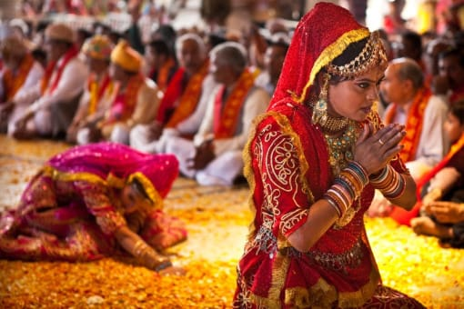
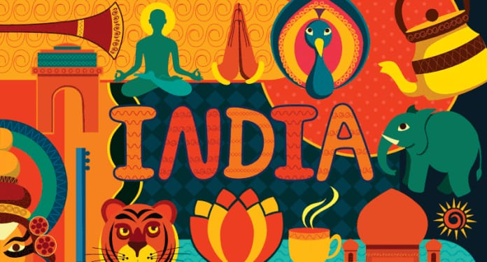
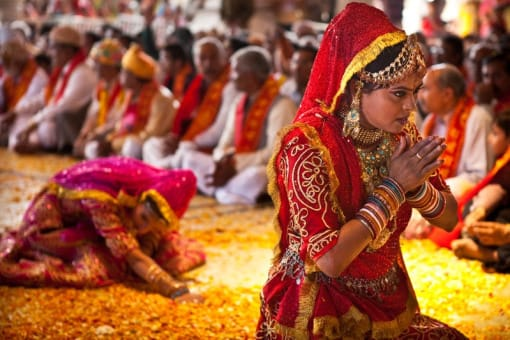
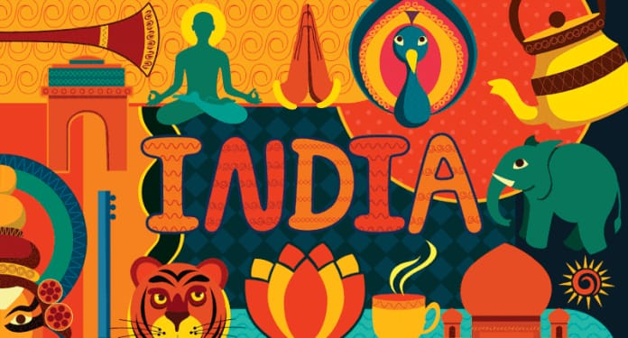
 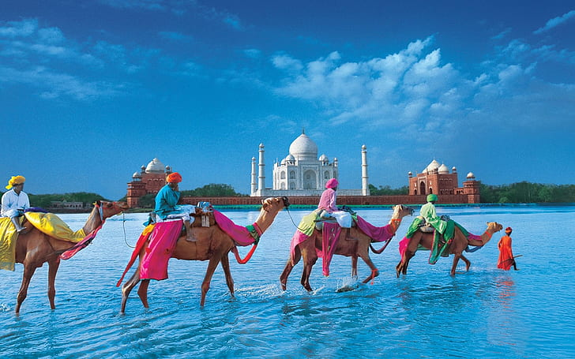
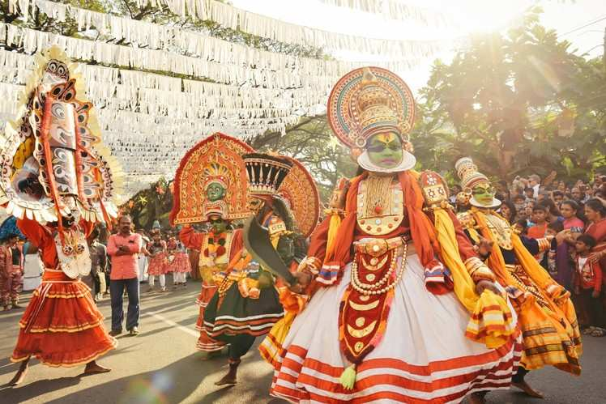
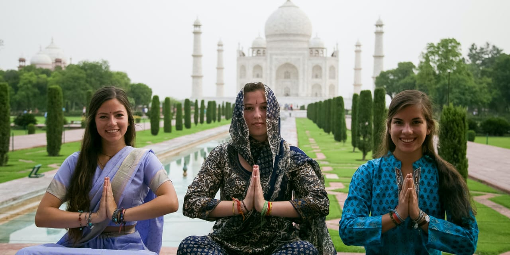
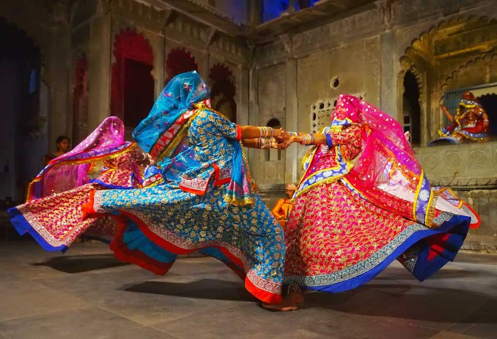
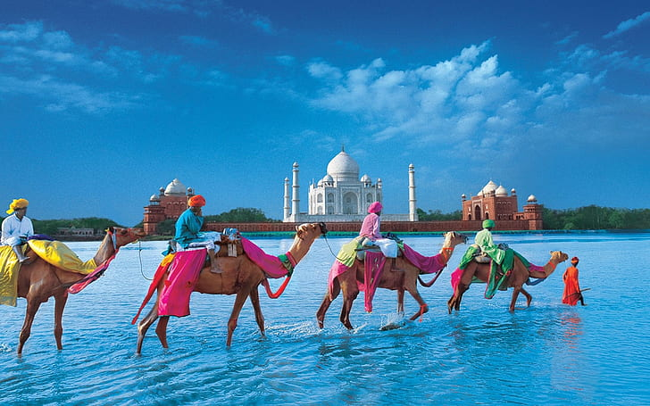
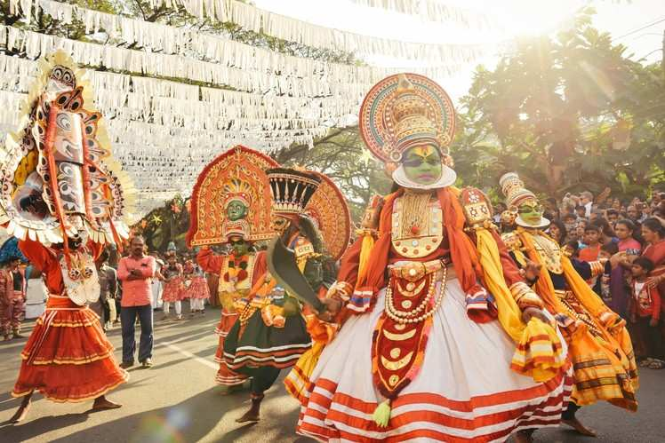
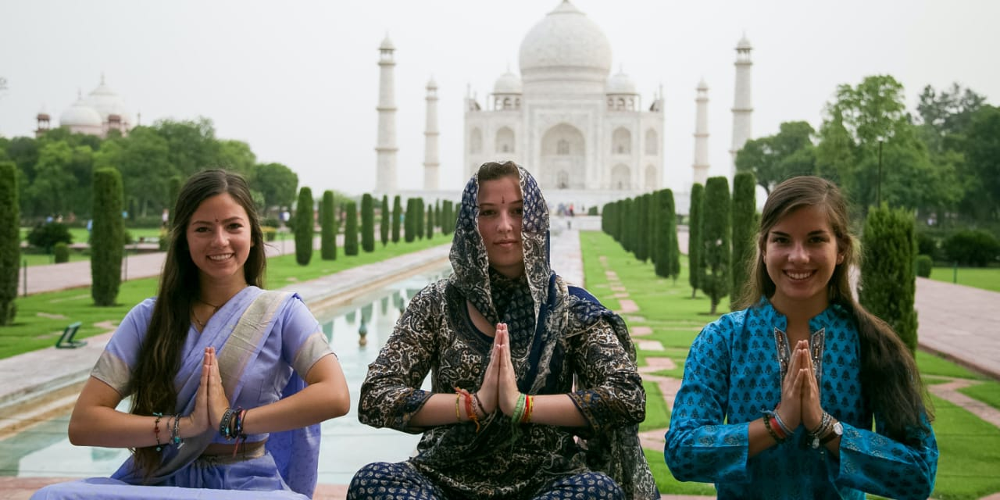
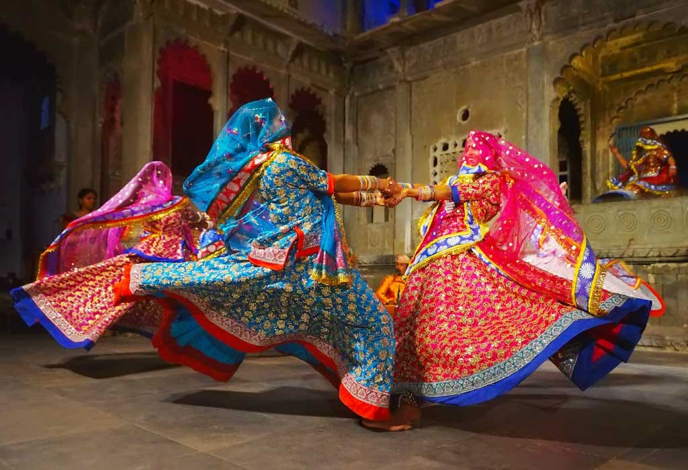